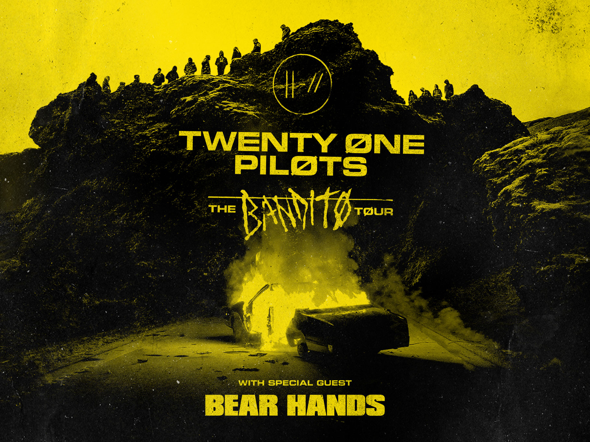

About group
Tyler Joseph

Tyler Robert Joseph is an American singer, songwriter, musician, rapper, and record
producer. He is best known as the frontman for the musical duo Twenty One Pilots,
alongside bandmate Josh Dun. Joseph was also a solo artist for some time, and released
an album titled No Phun Intended in 2008.
Josh Dun

Joshua William Dun is an American musician. He is best known as one half of the musical
duo Twenty One Pilots, alongside Tyler Joseph. He contributes to drums and percussion.
Best album
Trench

Trench is the fifth studio album by American musical duo Twenty One Pilots, released on
October 5, 2018 through Fueled by Ramen. It is the band's first studio album in three years,
after the breakthrough success of their previous album, Blurryface.